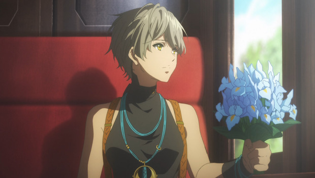
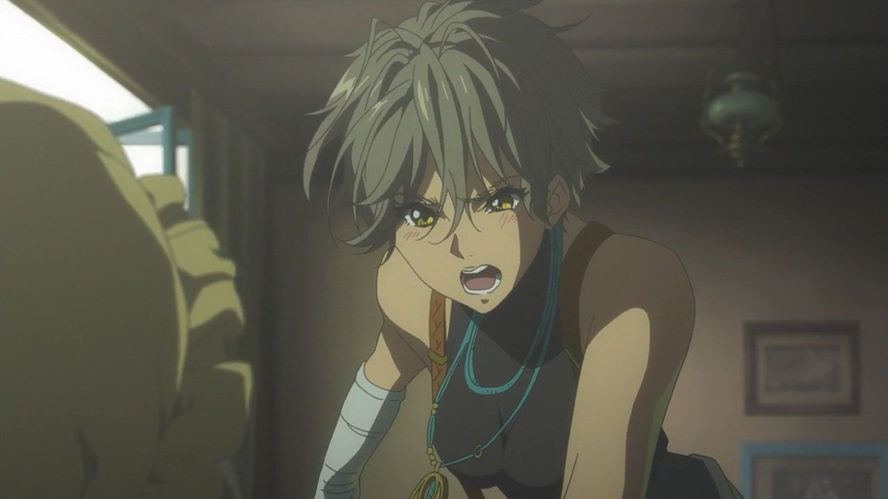
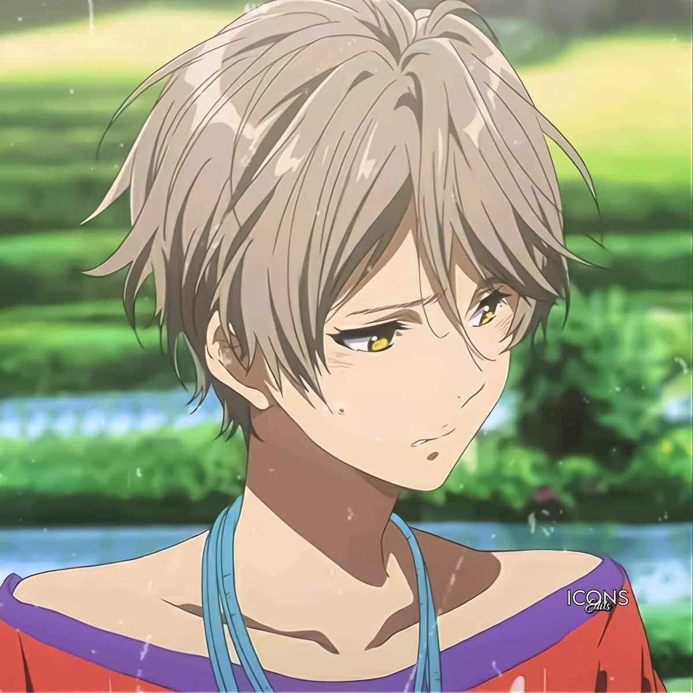
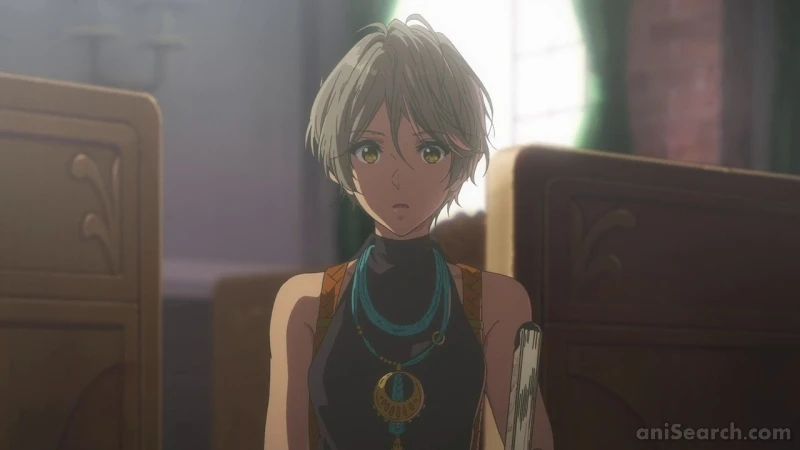
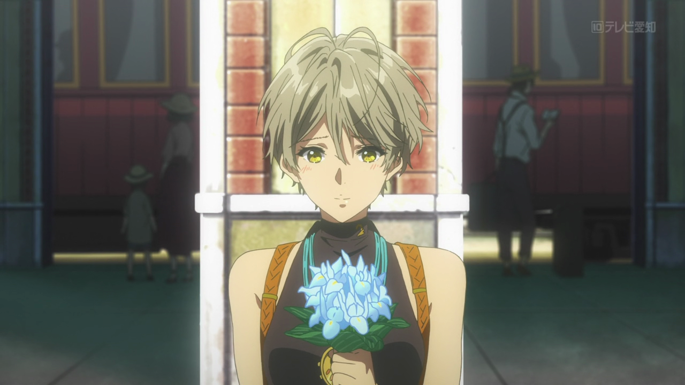
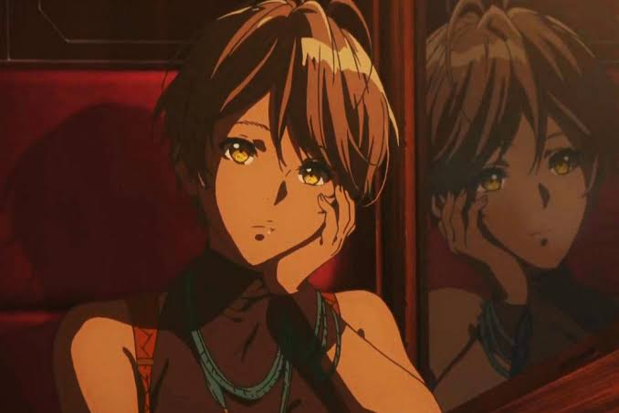

Iris Cannary

Iris Cannary es una Auto Memory Doll de la CH Postal Company, conocida por su energía, entusiasmo y determinación. Originaria de una pequeña aldea, Iris dejó su hogar para perseguir su sueño de convertirse en una escritora respetada. Su personalidad extrovertida y su fuerte deseo de destacar la convierten en una presencia vibrante dentro de la compañía.
Iris es segura de sí misma y competitiva, aunque a veces esta actitud la lleva a cometer errores. Sin embargo, su entusiasmo es genuino, y se esfuerza constantemente por mejorar en su trabajo como Doll. Aunque suele mostrarse independiente, tiene un lado sensible que aflora en momentos de vulnerabilidad, especialmente cuando se enfrenta a situaciones que tocan sus raíces personales.
La relación de Iris con Violet es un equilibrio de admiración y desafío. Aunque en un principio encuentra difícil aceptar la calma y precisión de Violet, con el tiempo aprende a respetar su forma de trabajar. Iris también comparte una relación cálida con Erica, actuando a menudo como su opuesta extrovertida, pero siempre apoyándola en los momentos necesarios. Su vínculo con el resto de los empleados de CH Postal refleja una dinámica de camaradería y apoyo mutuo.
Iris representa el esfuerzo por encontrar un lugar propio en un mundo amplio y competitivo. A través de sus interacciones con los clientes y sus compañeros, aprende a aceptar sus raíces y a equilibrar sus aspiraciones con su humanidad. Su evolución dentro de Violet Evergarden ilustra el valor del esfuerzo y la autenticidad, mostrando que incluso los errores son parte del camino hacia el éxito.
Galleria




